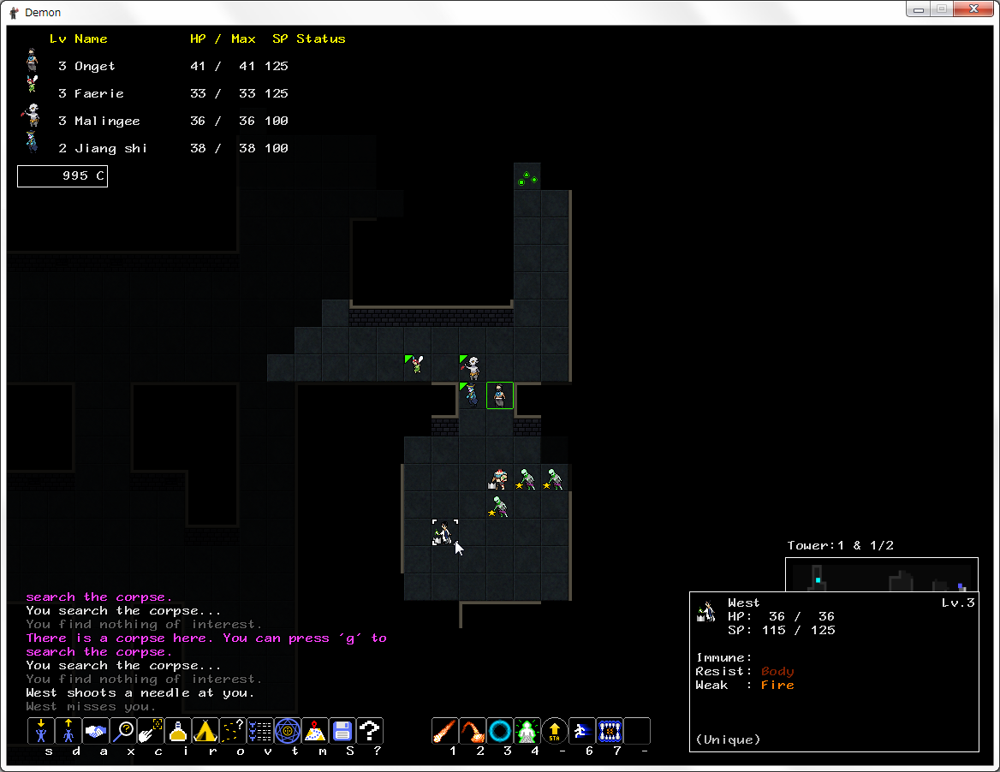
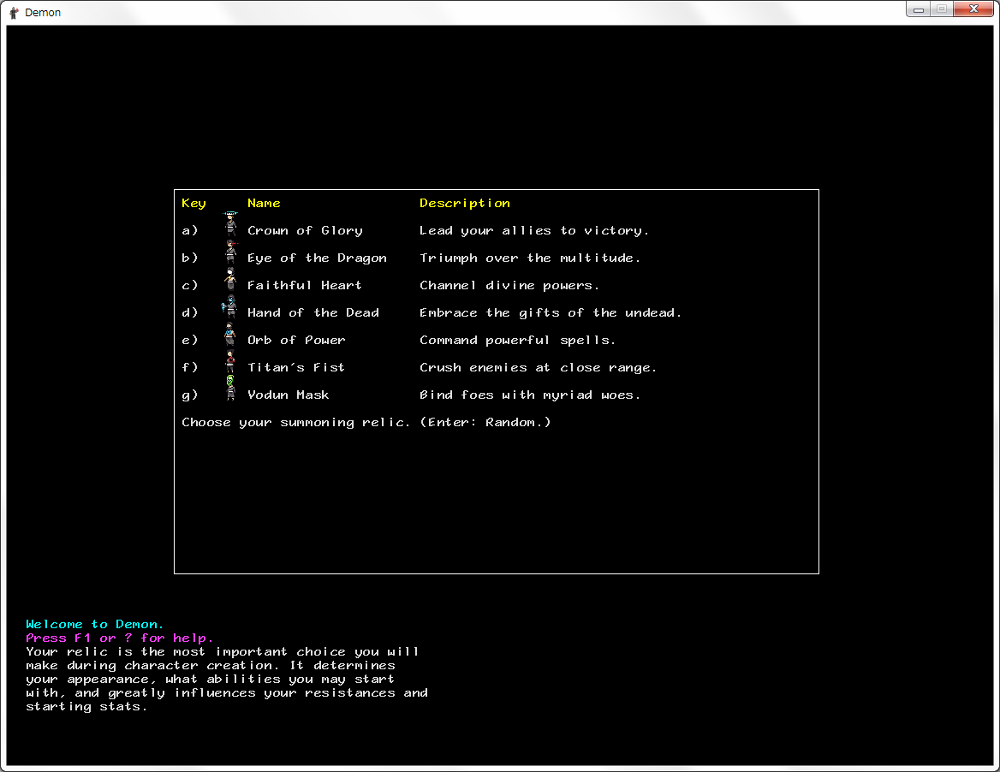
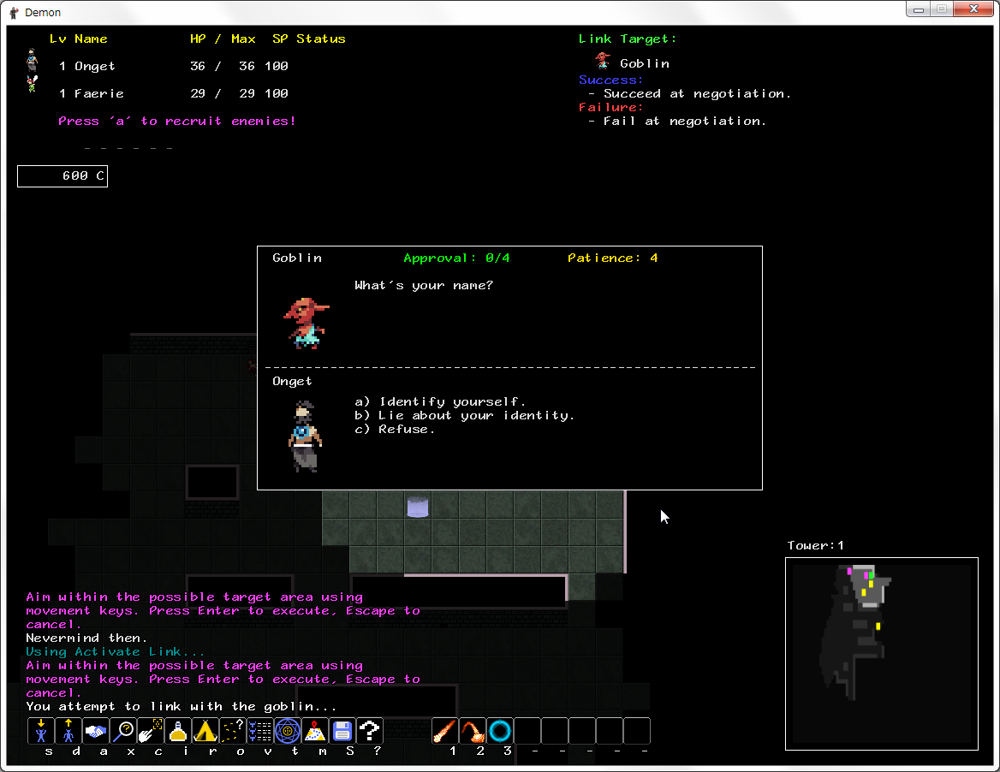

トップ
Roguelike Advent Calendar 2016 24日目 demon、triangle wizard紹介＋その他ちょっと紹介
Demon紹介
作者:Herbie Piland(FerretDev)氏
公式サイト:http://demon.ferretdev.org/
日本語wiki:http://wikiwiki.jp/demonwiki/
(2016/12/24現在ほぼ一人でwiki更新しているので更新してくれると凄くありがたい)
どんなゲーム？:敵を仲間にしながら進むパーティー制ローグライクゲーム。
更新も活発。
交渉で敵を仲間にしてアビリティを集め、コピーで他の仲間や@に覚えさせたり(そしてすぐ捨てられたりする)しなながら進んでいく。アビリティの組み合わせが重要になる。
そして@の弱点攻撃集中攻撃で死んだり、スタンと麻痺連発する敵で死んだり、
敵のサモナーが出てきて死んだり、敵のサモナーを倒したら死んだり、しながら(勿論死んだら最初からだが)
死んだ@はレリックレイス(crawlの亡霊みたいなもの)となってあなたの仇を討ってくれるだろう！。(別にそんなことは無く、次の@を殺そうとする。)
最上階(現在20階)にある階段を登ればクリア。(今のところ)
難易度は低め。ローグライク未経験者や初心者にもおすすめできる
システム、用語説明
レリック:@の力の源。キャラメイク時に7種類のレリックから一つを選択する事になる。
選択したレリックによって選択出来る初期アビリティ、耐性、ステータスが変わる。
デーモン:敵にして仲間。出現したデーモンを仲間にしながら進むことになる。
さまざまなアビリティや耐性、特性(2016/12/12時点で未実装)を持つ。
一度に3体まで召喚することが出来る(仲間デーモンは6体まで、レリックアビリティで上限は増やせる)
transmutations:金を消費してデーモンのアビリティをコピーしたり、デーモンを合成してModifierをつけて耐性やアビリティを増やしたりする。
あと死んだり合成に使ったデーモンの復活もできる。
基本的にアビリティを覚える手段はtransmutationsによるコピーか合成のみ。
操作方法
viキー(hjklyubn)かテンキーかマウスで移動。
s:仲間召喚 d:仲間を帰還させる(引っ込める)
a:リンク(デーモンを仲間にしようとする)
xか右クリック:調査 c:攻撃命令
i:アイテム r:全回復するまで待機
o:自動探索 v:パーティを見る
t:transmutations m:マップを見る
S:セーブ Q:セーブして終了
1-8:アビリティ使用
p<>:階段やポータルに入る
F10:ダンプ出力 -:オプション

塔には様々なデーモンが出現するが、人間も居る。(仲間に出来るのはデーモンだけなので人同士決して分かり合うことは出来ない、つまり殺すしかない。)
キャラメイク

レリックの選択→メイン属性の選択→サブ属性の選択→初期仲間の選択。
レリック:選択出来る属性、初期ステータス、耐性に影響
メイン属性:レリックによって決められた数種類の属性から一つ選択する。
アビリティ二つ、初期ステータス、耐性に影響
サブ属性:アビリティ一つ、初期ステータスに少し影響。
初期仲間:Lv1のデーモンから一体選択。どのデーモンも普通にダンジョンで出てくる
キャラメイクの選択は非常に重要。
初期アビリティは貴重なものが多く、それを軸にした育成や仲間選択をする事になる。
耐性も重要で、物理攻撃は50%、魔法攻撃は75%軽減することが出来る。(強力な属性攻撃をしてくる敵が序盤から複数出現する)
逆に弱点は物理攻撃33%、魔法攻撃50%ダメージが上昇するので、弱点を突くことも弱点を突かれないようにするのも重要。
出現するデーモンをメモして厄介なデーモンに有利な戦いが出来るように育成していこう。
難易度:
難易度は低めな感じ。(強ビルドなら)
運要素が小さく、安定ルートを構築することも出来る。
特定のアビリティに依存するようななビルドに手を出すと、出現するデーモンの知識などが必要になる。
異常に凶悪な敵も少なく、@と同じくデーモンを使役するサモナーくらい(弱そうなサモナーでも危険。)
食料システムなど時間制限はないが、敵の再出現などは無いので物資や経験値、デーモンは有限。
レリック紹介:
Crown of Glory:物理＋支援、状態異常タイプ。
初期レリックアビリティは召喚にターンを消費しなくなるQuick Summon、
帰還にターンを消費しなくなるQuick Dismiss。
状態異常攻撃か補助効果のついた攻撃をメインに使う。
状態異常攻撃は行動不能になるSleep状態にするKnockout、魔法を使えなくするMute状態にするThroat Slashや物理耐性を下げるHex状態にするWitch Cutなど、
補助攻撃は味方をHPが持続的に回復するregen状態にしつつ攻撃するReviving Cut、味方の防御力を上げつつ攻撃するGuarding Cutなど。
その他は物理攻撃時に味方を追加行動させるLeadershipや低HPの敵を即死させるHand of Light/Darkなどがある。
Str,Vit,Agi,Cun四種類のステータスを要求してきて中途半端になりがち。
Eye of the Dragon:バランス、範囲攻撃タイプ。
初期レリックアビリティはアイテムを感知し、フロアを完全に探索した時に追加でアイテムを得るItem Sense、
フロアを完全に探索した時に金を得るS.E.P.I.。
アビリティは残りSPが多いほど威力が上がるコーン範囲攻撃のブレスや、
周囲の敵をpanic状態にするterrifying Cry、ターン消費無しで自分の攻撃力を上げるfervorなど。
何がしたいのか良くわからない。
物理、魔法、状態異常と中途半端な感じ。
範囲攻撃も非常に使いづらく、全てのステータスを要求するため中途半端になりがち。
Faithful Heart:支援タイプ。だが攻撃魔法も使える。
初期レリックアビリティは仲間のHP回復速度と悪性状態異常回復速度を二倍にするNightingale、
デーモンにそのデーモンのmodifierのアビリティをランダムで覚えさせるRevelation。
唯一Light攻撃を初期から使えるレリック。
アビリティは初期アビリティ唯一のlight攻撃Humble(必中高火力だがHP最大の敵にしか使えない)とCensure(必中だが威力が低い)、
敵をshock状態にした時SP30回復するGalvanize、
現在HP50%以上の味方に威力105の回復をするSoothe、一定時間mendingを使用されていない味方に威力150の回復するmending(攻撃技は威力85-100程度)。
magは回復魔法の威力にも影響するので、攻撃魔法と回復魔法両方を使う事もできる。
Hand of the Dead:近接魔法＋状態異常タイプ:
初期レリックアビリティはデーモンを削除した時にHPとSPを回復するConsume、
これまたデーモンを削除した時に金を得るRecycle。
Wraith TouchはSP15で最大HP吸収攻撃が使える。(遠距離のVigor SiphonはSP30)
Orb of Power:魔法タイプ。初心者向け
初期レリックアビリティはアビリティを@にコピーする時に必要な金を半分にするTranslator、
デーモンを消費してそのデーモンが持っているModifierのアビリティを一つ@が習得するTranspose Soul.
アビリティは遠距離範囲のFlame OrbやFrost Ring、
速度を上げるHaste、
使いやすい範囲攻撃や最大HP吸収攻撃Vigor Siphonがある。
魔法は使いやすくて強く、耐性も優秀。
物理弱点なので敵の遠距離物理は痛いかもしれない。
まあ物理弱点のダメージ上昇は33%なのでなんとかなる、魔法は50%だ！
Titan's Fist:物理タイプ。
初期レリックアビリティはFuse Demonにかかる金を25%軽減するFusion Saver、
デーモンを消費して@の最大HP、速度、耐性を変更するSoul Armor。
弱い。物理は弱い。
5SPで威力100の攻撃、clobberが使えるぞ！
物理:Earth Break:Impact属性、威力55、射程1 3x3範囲、消費SP30 必中
魔法:Flame Orb:Fire属性、威力55、射程3 3x3範囲、消費SP25、 必中 追加効果33%ignate
この差……設定ミスなんじゃないかこれ？
Vodun Mask:状態異常タイプ。
初期レリックアビリティは敵を感知するEnemy sense、
召喚の射程を2マス伸ばすFar Summon I。
アビリティは貴重な遠距離物理Needle ShotやNumbing Needle、
敵の攻撃力を下げる範囲デバフWeaken hostや対象の状態異常が多いほど威力が上がるblight、
Vigor Siphonもある。

デーモンとの交渉、交渉にうっかり乗ってしまい@の仲間になってしまったデーモンはレリックに知性を奪われかつての仲間に牙をむく事になる。
(そんな設定があるかは分からないが、仲間はよく射線を塞いだり不利な位置に立つ)
リンク:デーモンを仲間にする手段。
a→デーモンを選択でリンクすることができる。
デーモンを仲間にするにはさらに特定の条件を満たす必要がある。(デーモン選択時にカーソルを合わせたデーモンの条件が右上に出る)
交渉(Success at negotiation.)
デーモンと交渉する。
デーモンの要求を飲めば(一番上の選択肢)approvalが上がり、approvalが貯まれば仲間になる。
断ればPatienceが下がり、0になると交渉決裂。
仲間削除しろとかアイテム要求してきたりして面倒
デーモンのHPを減らすと怒って回復しろ！だとか言い出したりする。
追いかける(Keep the (デーモン名) in sight for x turn(s).)
デーモンを視界内に入れ続ける。
視界から外しすぎると失敗。
大体早かったりして面倒。
戦闘(Defeat the (デーモン名)!)
一定ターン以内にデーモンを倒す。
デーモンにバフが掛かったりして面倒。
敵を倒す(Defeat x other enemies!)
他の敵を一定ターン以内に倒す
楽な方。
と思わせておいて、フロアに敵がもう居なかったりする。
待機(wait x turn)
一定ターン何もしない。
超楽。ほとんど居ないが。
他にも色々ある。
Offering系のアイテムを使えば即仲間になる。
Transmutation
金を消費してデーモンを強化する。@のレベルアップもここで行う。
Level Up(レベルアップ):@のボーナスポイントを振り分ける。一回レベルアップする毎に5p.
Copy ability(コピー):デーモンのアビリティーを@か他のデーモンにコピーする。
@のアビリティはコピーできない。
非常に重要。アビリティの質は強さに直結する。
Fuse Demon(合成):デーモンを合成して他のデーモンにmodifierをつける。
付くmodifierは合成に使ったデーモンのmodifier。
modifierをつけると、modifierの種類応じてステータス、耐性が変化し、modifierのアビリティから二つランダムに習得する。
弱点を消すようには付けられない。
うまく活用して耐性の充実したデーモンを作っていこう。
Restore Demons(復活):死亡したり削除したデーモンを復活させる。
レリックアビリティによって他のTransmutationが使えるようになる。
Revelation:デーモンに自分のModifierのアビリティをランダムで覚えさせる。
Transpose Soul:デーモンを消費してそのデーモンが持っていたModifierのアビリティ一つを選択して@が習得する。
ランダムに頼らず貴重なアビリティを習得する数少ない手段。
Soul armor:デーモンを消費して@にデーモンの耐性、HP補正、速度をつける。
@の耐性を変更したり、速度を恒久的に上げる唯一の手段。
戦闘
戦闘は複数対複数が基本で、消耗したデーモンを帰還させてHPSPの高いデーモンを召喚したり、状況に合わせてデーモンの交代をする事になる。
弱点攻撃や敵の攻撃に耐性を持つデーモンがいれば非常に有利に戦う事ができる。
初心者向けアドバイス
OrbofPower-Fire-Iceが使いやすくて強い。魔法系ビルド。
↑の組み合わせならステータス振りはmagメインで好みでvit,agiにも振る。
初期仲間はFaerie一択。初期仲間唯一の回復魔法持ち。
回復魔法は重要。
ルート構築が重要。デーモンのステータスをメモして自分のルートを構築していこう。(そしてwikiにガイドを投稿しよう！)
敵のサモナー、レリックレイスと戦う意味は2016/12/12バージョンでは何の意味もない。経験値がちょっと貰えるだけ。